Speakers
Will studies the use of quantitative methods for measuring and preventing partisan gerrymandering. He is also interested in studying, from a quantitative perspective, the likely effects of various policy proposals to reform how districts are drawn.
While a Ph.D. student, he founded the Scientist Action and Advocacy Network, a group of scientists that provides pro bono scientific consulting for nonprofits.
Will holds a Ph.D. in computational...

Lance Albertson is the Director for the Oregon State University Open Source Lab (OSUOSL) and has been involved with many open source projects since 2003. The OSUOSL provides hosting for more than 160 projects, including those of worldwide leaders like Debian Linux, the Linux Foundation and AlmaLinux. The most active organization of its kind, the OSUOSL offers world-class hosting services, professional software development and on-the-ground training for promising students interested in open...
Thea is a Developer Evangelist at Zephyr Project (Linux Foundation). Previously she worked as a developer advocate at Eclipse Foundation. She is passionate about data, connectivity and IoT.

Rami is the DevOps engineer on the Public Cloud team at Workday where he works on building, deploying and managing Workday services and infrastructure on AWS using Cloud Native technologies.
Saad Ali is a senior software engineer at Google where he works on the open-source Kubernetes project. He joined the project in December 2014, and has led the development of the Kubernetes storage and volume subsystem. He serves as a lead of the Kubernetes Storage SIG, and is co-author and maintainer of the Container Storage Interface. Prior to Google, he worked at Microsoft where he led the development of the IMAP protocol for Outlook.com.
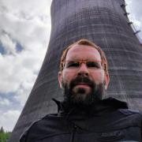
Kyle Anderson is an SRE on the Compute Infra team at Yelp and has been tinkering with servers for more than 10 years.
Vincent L. Anderson is an ML Engineer and Technical Consultant at MIGHTY HOUSE INC., a Government contracting corporation in Research&Development. He is also an instructor for boot camps specialized in accelerated adoption of software engineering and Machine Learning. Formerly an Economist&Statistician, with a BA in Economics from the University of Hawaii Manoa, Vincent has spearheaded projects in senatorial campaign finance, and corporate financial planning, which eventually led to...

Roller Angel spends most of his time helping people learn how to accomplish their goals using technology. He's an avid FreeBSD Systems Administrator and Pythonista who enjoys learning all the amazing things that can be done with Open Source technology, namely FreeBSD and Python, to solve issues. He's a firm believer that one can learn anything they wish to set their mind to. He uses Configuration Management software on FreeBSD written in Python every day as part of his job as a...
Nikki Attea was an All-American college volleyball player and computer science research assistant. She started her career at tech giant Apple working on QA automation for the iOS and watchOS Performance teams. Seeking newer challenges in development, she entered the startup world as a Software Dev. Engineer at Sensu, Inc. where she has contributed to the Sensu Go product, improved DevOps infrastructure, and implemented new QA processes to aid in all around release efforts. Nikki is a work...
Maik Außendorf is a graduated mathematician and studied mathematics and informatics at the University of Münster, Westphalia. In his diploma thesis he focused on the implementation of an artificial neural network in C+ under Solaris and Linux. After his studies he worked as a SAP Consultant at Siemens AG in Colombia.
Between 1999 and 2003 he was Linux System Consultant and branch manager at Suse Linux AG. During this period he carried out Linux- based customer projects, starting from...
Henry Avetisyan is a Senior Principal Software Engineer in the Core Platforms team at Oath. He is part of a team responsible for providing security solutions to Oath properties such as service authentication, role based access control, and centralized key management system. He has a Master's degree in Computer Science from California State University, Northridge.
Professionally Joe has worked in Product Development for over 30 years starting out at Texas Instruments in the 1980s and now works for Schnieder Electric in the Industrial Automation R&D group creating control systems to automate Industrial facilities including Oil Refineries, Nuclear, and Coal Power Plants.
Joe began his Open Source contributions bringing mesh wireless networking to to the Amateur Radio community. In 2013, he established the first wireless hub site in Orange...

Jono Bacon is a leading community manager, speaker, author, and podcaster. He is the founder of Jono Bacon Consulting which provides community strategy/execution, developer workflow, and other services. He also previously served as director of community at GitHub, Canonical, XPRIZE, OpenAdvantage, and consulted and advised a range of organizations including Huawei, GitLab, Sony Mobile, Deutsche Bank, HackerOne, and others. He is the author of the critically-acclaimed The Art of Community, is...
Orv Beach is a long-time Linux user, and has been a ham radio operator for even longer (license callsign W6BI). He's an ARRL Technical Specialst, and the Training Chair for the Southern California Linux expo. He's deeply involved in the build-out of the local ham radio "Internet" using off-the-shelf wireless equipment.
Mr. Bennett has 20 years of experience as an information technology professional, and has been overseeing elections and voting systems technology innovation and management for Los Angeles County since 2004. Mr. Bennett has served in over twelve major elections leading technical operations, including voter precincting, redistricting, election configuration, ballot layout, sample ballot production and distribution, voting system programming and testing, and election tally and results reporting...

Josh Berkus spends his time messing around with containers, automation, and community-building for Red Hat Inc. Prior to that, he spent nearly two decades working on PostgreSQL. From his home in Portland, he cooks, makes pottery, and looks after a cat.
Louisa is the Marketing Director of System76. System76 is a Linux computer manufacturer, an advocate of open source software, and the producer of Pop!_OS, an operating system for makers, developers, scientists, and engineers.
Rob is a software engineer at Datadog in New York where he spends his time focused on cloud infrastructure and the developer platform. He is currently leading the Compute team, working on building and scaling global compute infrastructure built on Kubernetes.
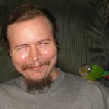
Chris Brannon has been blind since birth. He grew up with a passion for technology, earning his first amateur radio license at age 10, and holds both a BS and MS in computer science. He currently works for Prgmr.com and was a customer for several years before becoming an employee. Prior to that, he worked at Google.
He has worked on various open-source projects over the years, most of which are related to accessibility under Linux. He has made significant contributions to Speakup...

KC Braunschweig has spent the last 13 years as a production engineer working on Facebook/Meta infrastructure. He's currently working on public cloud infrastructure and tooling. He's previously worked in areas including logging, stream processing, distributed coordination, search infrastructure and configuration management. He's been a SCaLE attendee and volunteer since SCaLE 1x.
Michelle Brenner (she/her) is a Senior Software Engineer with 13 years of experience. She started in engineering support and now leads large-scale development projects. A Philadelphia native who currently calls Los Angeles home, she is an art school graduate and a self-taught engineer. During her career, she has most enjoyed creating software that enables others to succeed, from digital artists to restaurateurs to fellow engineers.
Michelle has shared her technical travails, team-...
Erica Brescia is the co-founder and COO of Bitnami, the leading provider of packaged applications for any platform. The Bitnami application automation platform delivers and maintains a catalog of 120+ ready-to-run server applications and development environments in partnership with the world’s leading cloud providers including Amazon, Google, Microsoft, and Oracle, driving over 1 million deployments per month. That same application automation platform is also available to enterprises via...
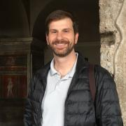
Eric is a Staff Open Source Engineer at VMware where he has been solidly contributing to open source the last four years. He has 20 years experience in the software development industry. The bulk of his experience has been with security, protocols, configuration and systems management. Much of his time at VMware has been working on OpenStack as part of the VMware Integrated OpenStack product. But he now leads a team within the Open Source Technology Center focusing on open source...

Lee Calcote is an innovative product and technology leader, passionate about developer platforms and management software for clouds, containers, functions and applications. Advanced and emerging technologies have been a consistent focus through Calcote’s tenure at SolarWinds, Seagate, Cisco and Pelco.
An advisor, author and speaker, Calcote is active in the tech community as a Docker Captain and Cloud Native Ambassador.
Dr. Josiah Carlson Ph.D. is an American Theoretical Computer Scientist, best well known for his book on Redis; Redis in Action, his talks on Redis and/or Python, his open source libraries relating to Python, Redis, Lua, thousands of public mailing list posts relating to Redis, Python, wxPython, and/or data compression, as well as a handful of blog posts. Professionally, the good doctor has worked on email anti-spam, text search, non-binary classification, GPS navigation, data compression,...
Alison is an automotive systems programmer and kernel engineer and has worked at Nokia, Mentor Graphics, Peloton Technology and Aurora Innovation. In 2014-2015, she collaborated on-site with a customer in Germany. Alison has spoken at events including ELC and ELCE, USENIX, LibrePlanet, linux.conf.au, Automotive Linux Summit, SCALE and Maker Faire. She lives in Mountain View , CA where she rides bikes, attends concerts, drinks beer and studies German.

Colin Charles is the Managing Consultant at GrokOpen. Previously, Colin was on the founding team of MariaDB Server, and has been around the MySQL ecosystem including being an early employee at MySQL, and worked actively on the Fedora and OpenOffice.org projects. Colin has been a MySQL user since 2000. He's well known within open source communities, enjoys building business and market entry in APAC and has spoken at many conferences.

Iván Chavero wrote his first programs in BASIC at the age of 10, promoter and developer of free software since 1997, he is a systems engineer from the Autonomous University of Chihuahua where he spent over 15 years managing high availability systems, he is currently Senior software engineer at Red Hat. Iván, actively contributes to several open source projects mostly related to OpenStack and cloud computing.
He is a founding member of the Chihuhaua's Linux user group and...
An active member of the San Gabriel Valley Hardware Hackers group (SGVHAK) and member of Linux User's Group (SGVLUG) Roger is interested in many topics around the intersection of mechanical hardware and intelligent software.
Dave is a Linux Platform Software Engineer at Indeed. He works closely with the DevOps and SRE teams improving reliability, scalability, and performance across Indeed’s cloud. He’s an Ubuntu Core Developer, and has been debugging Linux issues professionally in one way or another for the last 15 years.
Vicențiu is Chief Development Officer at MariaDB Foundation. Vicențiu has contributed substantial features to MariaDB Server, including SQL Standard Roles and Window Functions. To ensure that MariaDB has a thriving community Vicențiu ensures that distribution and packaging related bugs are fixed in a timely manner. Additionally, he encourages new contributors by mentoring students as part of outreach programs such as Google Summer of Code. His latest work revolves around improving the...
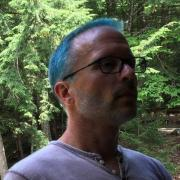
Matthias manages part of the desktop team at Red Hat. He is the maintainer of GTK+ and a member of the GNOME release team.
Recently, he and his team have been involved in creating Flatpak and Fedora Silverblue.
Brian is a life long computer nerd that has always had an interest in computer graphics. He discovered Linux in 1994 when needing an OS to run an ISP and eventually found it to be a much better alternative to Windows on the desktop, coming from the Amiga he was using at the time. Although system administration is what tends to bring home the bacon he moonlights with computer video, VFX, 3D and images. He is an avid photographer and has designed hundreds of logos for organizations all over...
Adrian works at Pivotal, on the Spring Cloud team. He spends most on Zipkin, usually in Java. His focus is open source distributed tracing systems.

Instructor at Kucera Middle School, earned doctoral degree in Educational Leadership with emphasis in Educational Technology. Dissertation: Acceptance of technology innovations in public education: Factors contributing to a teacher's decision to use free and open source software. Previous presenter at SCaLE, Southwestern Community College, Alliant International University, Point Loma Nazarene University & Harvey Mudd College.
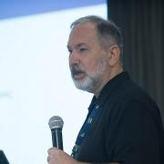
Joe Conway is a technology executive with skills in a wide array of disciplines and extensive international business experience. He has been involved with the PostgreSQL community since 1998, presently as a PostgreSQL Committer, Major Contributor, and Infrastructure Team member. He is also the author and maintainer of a PostgreSQL procedural language handler for the R language, PL/R. Joe is currently Head of the PostgreSQL Contributors Team at Amazon Web Services, RDS Open Source Databases...
I am sysadmin at C4 Technologies a company that I co-founded in 2011 where we offer FOSS to new businesses and call centers. I started taking pictures 2 years ago I loved so much that it is my main hobby now. Also I love to be speakers, I have done about 30 different presentations Open Source related in schools, local communities and small conferences. I am coordinator at the Linux User Group of Tijuana, México, city where I was born and raised.
Jason Cox is a Director of Platform & Systems Reliability Engineering at The Walt Disney Company. He majored in computer science and electrical engineering at the University of Tulsa and later worked in civil engineering, helping transition from manual drafting & engineering to CAD and then helped design and build public infrastructure and residential subdivisions for 6 years. He then co-founded a local ISP and web hosting startup, managing datacenters and business operations. After...
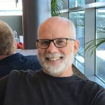
Working with PostgreSQL since 1999. PostgreSQL Major Contributor.
Currently maintains the PostgreSQL JDBC driver.
Likes to test his knowledge of physics by driving his car on a racetrack.
Gabi is a Developer Advocate on Google Cloud and a passionate Software Engineer. She likes simplifying complex systems, and believes abstractions are best when they can be understood in a real life example. She’s driven to go beyond DBA lingo to make database and storage technology more accessible to software developers. Writes at gabriela.io and Medium sometimes.

Lan Dang is an Operations Engineer with the Jet Propulsion Laboratory, specializing in science data systems operations and large scale data processing. She spends most of her time on the command line of various remote Linux systems. Her favorite tools are screen, awk, vim, and git. Her contributions to open source focus on community-building and evangelism. In her spare time, she is active in the San Gabriel Valley tech community as a leader of the SGVLUG and its sister group, the SGVHAK...
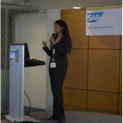
Software engineer & founder of hackohire, a career development platform for tech talent. Building hackohire using vue.js & firebase. I help tech managers to be successful by helping them with the interviewing process through interview hackathons and tech tank.
John has been a DevOps Architect for the last 10 years. Currently working with Hashicorp tools to help clients with Cloud Native migrations. John has been a part of start-ups that include Mesosphere and Apigee as well as Accenture supporting many cutting edge IOT projects. Besides technology, John enjoys the outdoors, loves flying, and playing softball on weekends.
Software Engineer at Zalando, PostgreSQL contributor.
Matt Dorn is a Senior Software Engineer at Red Hat and helps hundreds of IT teams around the world succeed with cloud native technology. He is the author of the “Preparing for the Certified OpenStack Administrator Exam” book, creator of the O’Reilly “Getting Starting with OpenStack” online class, and one of the leaders of the San Antonio Kubernetes MeetUp.
Matt previously worked at CoreOS as a Field Engineer and Senior Technical Instructor. Prior to CoreOS, he worked at Rackspace and...
Darren has 20 years of professional experience as a technology professional. His experience includes 10 years of developing and delivering software development, information technology, and project management training programs. As an independent technology consultant he implements software solutions to solve business problems for clients across multiple industries and also runs PostgresCourse.com.
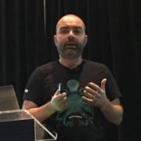
Michael Ducy currently works as Director of Community & Evangelism for Sysdig where he is responsible for growing adoption of Sysdig’s open source solutions. Previously, Michael worked at Chef where we held a variety of roles helping customers and community members leverage Chef’s open source and paid solutions, as well as implement the ideas and practices of DevOps. Michael has also worked in a variety of roles in his career including Cloud Architecture, Systems Engineering, and...
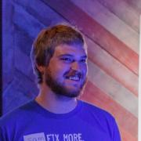
I built my first LAMP stack at high school and have been using MySQL ever since. I've never really considered myself a DBA - I just like writing automation to deal with massive distributed systems and naturally the edge cases that comes with that.
Today, I write Python automation to manage one of the worlds biggest MySQL deployments which is responsible for securely storing almost everything to do with the Facebook social graph.
Debo Dutta is a Distinguished Engineer at Cisco where he leads a technology group at the intersection of algorithms, systems and machine learning. Kubeflow is one of his current efforts in AI/ML. While at Cisco, he has also been a visitor at the Department of Management Sciences and Engineering, Stanford. He got his PhD in Computer Science from University of Southern California, and an undergraduate in Computer Science from IIT Kharagpur, India.
Damon Edwards is a Co-Founder of Rundeck Inc., the makers of Rundeck, the popular open source Self-Service Operations platform. Damon has spent over 20 years working with both the technology and business ends of IT Operations and is noted for being a leader in porting cutting-edge DevOps techniques to large-scale enterprise organizations. Damon is a frequent conference speaker and writer who focuses on DevOps, SRE, and Operations improvement topics. Damon is active in the international...
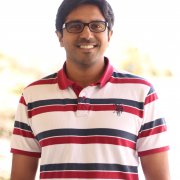
Jithin is an Engineering Manager and Product Owner with Oath, leading an Open Source CICD project Screwdriver. He has been been a Software Engineer for over 10 years with a focus on front end engineering. Jithin leads the CICD efforts at his company, Oath and manages a centralized build infrastructure which involves technologies like Kubernetes, Docker, AWS etc.

Rikki Endsley is an editor and community architect for Opensource.com. Previously she worked as a community evangelist on the Open Source and Standards team at Red Hat. Other hats she has worn include: tech journalist; community manager for the USENIX Association; associate publisher of Linux Pro Magazine, ADMIN, and Ubuntu User; and managing editor of Sys Admin magazine and UnixReview.com.
Ken is a jack of all trades from a network engineering background. He is a decent welder and mechanic, better than passing electronics enthusiast, network management nerd, open source advocate, data consumer, network engineer, sysadmin and public servant. Interests include building strange (neat!) things, exploring the world in 4x4s, HAM tech, search & rescue volunteer, and occasionally take photos of travel adventures. He runs many systems at Willamette University including the campus...
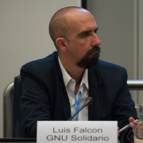
Luis Falcón, M.D. holds a degree in Computer Science and Mathematics (USA) and in Medicine (Argentina). Luis is a social, animal rights and Libresoftware activist. Founder of GNU Solidario, NGO that delivers Health and Education with Free Software. Author of GNU Health, the award winning Free/Libre Health and Hospital Information System. Guest speaker at international conferences about Free Software, eHealth and Social Medicine. Dr Falcon currently lives in the Canary Islands.

Charles Finley is President of Transformix which specializes in legacy application migration and modernization. He has over 40 years experience working in a number of different computing environments. Systems range from legacy COBOL and green screen based applications to cloud, web and mobile applications.
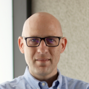
Sam leads the engineering team as SVP of Technology at Kharon, bringing experienced leadership in areas such as data analytics, application and data architecture, machine learning, and natural language processing. Sam has developed smart software platforms and provided targeted R&D in industries such as ad tech, search tech, mobile telephony, and entertainment tech. Sam holds an MS in Computer Science from USC with a special designation in Intelligent Robotics.
Senior Database Engineer with Crunchy Data Solutions. Author of several popular 3rd-party PostgreSQL tools such as pg_partman, mimeo, & pg_extractor
As an engineer working in Western Digital's Research department Alistair is focused on QEMU and RISC-V ecosystem enablement. He has previous industry experience working in embedded devices, focused on business facing SoC design and software stacks. He works with OpenEmbedded daily expanding the RISC-V support and using it to produce test cases and demos for QEMU and hardware.
Austin is a high school senior at Polytechnic School in Pasadena, California. He is a self-taught data analyst and computer scientist in the making. Sports analytics has been a hobby of Austin's for many years, and he especially welcomes conversations involving statistics in football and baseball.
Karthik Gaekwad is a Principal Engineer for Oracle Cloud Infrastructure. He's been in many engineering roles inside Oracle and was on the product teams that released various container based products including Oracle Kubernetes Engine. He is a innovator in the devops, agile and container technologies. He is an author on LinkedIn Learning, a frequent presenter at conferences, and organizes many technical events including Devopsdays Austin. He frequently writes at cloudnative.oracle.com....
Craig Gardner has worked with SUSE for many years and in various roles. Prior to working directly for SUSE, he played an important role in bringing the SUSE and Novell engineering teams together with common tools and processes. Formerly an engineer and engineering manager, Craig is now a technical training architect, creating training materials for various products such as SUSE Enterprise Storage (which uses Ceph). He has a long history with and love for the Open Build Service. Beyond SUSE,...

Richard Gaskin is the owner of Fourth World Systems, a software design and development consultancy in Los Angeles. Since founding the company in 1994, he's developed dozens of commercial and open source applications used by a wide range of organizations, including FedEx, AOL, the US Library of Congress, and thousands of hospitals and universities around the world.
Although he started his career with Mac OS, Richard has since delivered applications for Irix, every version of...
Peter is a Software Engineer at Facebook AI Research (FAIR), where he helps build state-of-the-art AI research platforms. His background and interests lie at the intersection of distributed systems, machine learning algorithms and compiler engineering. Prior to Facebook he studied Computer Science at Technical University of Munich, interned at Google, Facebook and Bloomberg, and researched generative adversarial models in the context of computational biology at the Broad Institute of MIT and...

Deb is the Executive Director of the FreeBSD Foundation, joining as the first employee back in August, 2005. Prior to that, she spent two decades working as an embedded firmware engineer, technical marketer, and technical sales engineer in the data storage industry, before venturing in the world of open source and operating systems. She's now spending more time learning about operating systems and integrating more of her day-to-day Foundation work running on a FreeBSD system. Besides...
Mike Goodness is a Systems Architect at Ticketmaster who began working with Kubernetes in late 2015 and quickly became an avid member of the community. As a CNCF Ambassador he promotes the use of cloud native technologies to develop, deploy, and operate scalable, reliable applications. He is an emeritus maintainer of the community Helm charts repository and a recent devotee to the practice of #GitOps. Hailing from Wisconsin, Mike is a co-organizer of DevOps Days Madison, a dedicated...
Tanmai is the co-founder of hasura.io, an open-source engine that gives developers instant realtime GraphQL APIs and event-sourcing on Postgres. Tanmai has been active in the cloud-native, postgres & GraphQL community, is a frequent speaker at related international conferences and is the author of https://3factor.app. 3factor an architectural pattern for building scalable and resilient backends with GraphQL, event-sourcing and serverless.
He is a...

Ryan is a seasoned marketing and creative professional. He is the founder and creative director of Freehive (https://freehive.com), an experienced creative agency powered by free and open-source creative software that works exclusively with artists, illustrators, designers, and developers who share a passion for these tools. Prior to starting Freehive in 2010, he was a successful marketing executive and creative director at a consumer goods manufacturer and...
Ted Gould is currently an engineer at Axiom building self-hosted monitoring solution. He is the chairman for Texas Linuxfest 2019, a member of the Inkscape board, and an Ubuntu Member previously working on Ubuntu Phone. Ted has been speaking about Ubuntu and Open Source to a variety of audiences over the years from seminars at universities to conferences and user groups.
Gareth is a software developer at Saltstack and an occasional FLOSS Weekly cohost. Gareth lives in Southern California with his wife, where they are owned by several pets.

Brendan Gregg is a senior performance architect at Netflix, where he does large scale computer performance design, analysis, and tuning. He is the author of Systems Performance published by Prentice Hall, and received the USENIX LISA Award for Outstanding Achievement in System Administration. He has previously worked as a performance and kernel engineer, and has created performance analysis tools included in multiple operating systems, as well as visualizations and methodologies.

Magnus Hagander is a member of the PostgreSQL Core Team and a developer and code committer in the PostgreSQL Global Development Group.
Magnus is one of the original developers of the Windows port of PostgreSQL. These days, he mostly works on other parts of the PostgreSQL backend, recently with a focus on security features, monitoring and backup/replication interfaces and tools.
He is also one of the core members of the postgresql.org infrastructure team, maintaining the servers...
Nathan Haines is an author, instructor, and computer consultant who fell in love with Ubuntu in 2005, and helped found the Ubuntu California Local Community Team to share that excitement with others. As the leader of the California team and a member of the Ubuntu Local Community Council, he works to help others support and share Ubuntu worldwide.
His mission to educate and excite people about Free Software and Ubuntu continues with his book, Beginning Ubuntu for Windows and Mac Users...

der.hans is a Free Software, technology and entrepreneurial veteran. He is a repeat author for the Linux Journal with his article about online privacy and security using a password manager as the cover article for the January 2017 issue.
He is chairman of the Phoenix Linux User Group (PLUG), BoF organizer for the Southern California Linux Expo (SCaLE) and founder of the Free Software Stammtisch.
He presents regularly at large community-led conferences (SCaLE, SeaGL, Tux-Tage,...
Bond loves spatial analysis, organized data, bike commuting, and all the animals. She spends her weekdays wrangling asset data for the City of Beverly Hills.
Mitchell Hashimoto is the creator of Vagrant, Packer, Serf, Consul, Terraform, Vault and Nomad - a set of open source tools that each individually are downloaded and used millions of times per year. Mitchell is the founder of HashiCorp, the company backing these open source tools, where he’s held both the CEO and CTO position. At HashiCorp, Mitchell is helping define a remote-first culture with over 400 employees spanning dozens of countries.

John 'Warthog9' Hawley led the system administration team on kernel.org for nearly a decade, leading a team including four other administrators. His other exploits include working on Syslinux, OpenSSI, a caching Gitweb, and patches to bind to enable GeoDNS. He's the author of PXE Knife, a set of interfaces around common utilities and diagnostics tools needed by an average systems administrator, as well as SyncDiff(erent) a state-full file synchronizer and file transfer...
Christian has been involved in the Free Software community since the late 90's. He has worked on a wide range of desktop and server technologies for GNU/Linux. He worked on Gtk+ based applications while at VMware and Red Hat and contributes to GNOME and associated technologies. He is also the author of the official MonogoDB C driver.
In the summer of 2014, Christian quit his job to build a new IDE for the GNOME desktop, called Builder.

Rob is an engineer at Xolv. He received his B.S. in Computer Information Systems from Chapman University. In his free time, he volunteers on SCaLE Tech Team and is a nixpkgs maintainer. When he’s not contributing to open source projects, you can catch him participating in sailing races around California or tinkering with digital modes on his HAM radio.

Jason Hibbets is a senior community architect at Red Hat which means he is a mash-up of a community manager and project manager designing programs for people to participate in communities. His current role involves building community interest for #EnableSysadmin--a watering hole for system administrators. He is the author of...
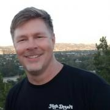
Larry Hignight is a machine learning and data science consultant with over fifteen years of professional experience. He has worked at the following companies and universities: Ascender AI, Moonlight Labs, Boeing, ReachLocal, Gamblit Gaming, Adtalem Global Education, University of Southern California and Embry-Riddle Aeronautical University.
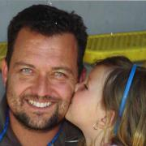
Ken has been in the IT field for over 20 years, starting as a developer and QA engineer then switching to technical consulting for a few years before landing in technical pre-sales. Most of his early career was spent with Enterprise Integration back in the old Hub and Spoke architecture days then morphing into Services Oriented Architecture working with the Crosswords Integration Engine then IBM’s Websphere Process Choreography, Websphere Integration Bus and Enterprise Service Bus. Jumping...
A Postgres Database Administrator at Procore Technologies with a background that spans integrations, online marketing reporting, construction, and finance. I'm most experienced in replication/DR/HA, query optimization, and schema management in a high load environment, both on-premise and in the cloud.

Michael Hrivnak is a Principal Software Engineer at Red Hat. After leading development of early registry and distribution technology for container images, he became involved with solving real-world orchestration problems on Kubernetes. He now works on the Automation Broker and Operator SDK, projects that automate application management on Kubernetes by incorporating tools such as Ansible and Helm. Experienced in both software and systems engineering, Michael is excited to be writing software...
Developer for most of his life and open source enthusiast and advocate for big part of it. Over the time involved in openSUSE and Gentoo communities, activelly participating on various local events and even cofounded the biggest opensource conference in Czech republic. Started his profesional career at SUSE and during whole his career worked on open source projects. Interest in various hardware gadgets brought him to his current job where he is leading a departement full of amazing people...
Brian Hsieh leads Open Source at Uber, managing strategy, governance, inbound and outbound licensing, developer advocacy, community building, and foundation relationships. He also leads the initiatives to evolve the open source culture at Uber. Brian holds a Ph.D. in Computer Science from National Tsing Hua University in Taiwan. He has held roles in research, engineering, management, and leadership positions throughout his career. Passionate about open source and organizational...
Harry Hsiung is a technical marketing engineer for Intel and has been working on Unified Extensible Firmware interface (UEFI) for the past 12 years.He has spent most of his time as a firmware engineer at Intel for 21 years and has worked on servers and client systems at Intel.
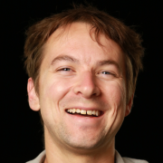
Randall Hunt is a Senior Technical Evangelist and Software Engineer at Amazon Web Services in Los Angeles. Randall spends most of his time building demos and writing about new services and launches. Python is his favorite programming language but he can sometimes be found in the dark realm of C++. Prior to working at AWS, Randall launched rockets at NASA and SpaceX but he found his programming passion at MongoDB. He is a total space nerd.
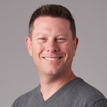
Matt Ingenthron is a VP of Software Engineering at Couchbase a software development background and experience with high-scale, high performance system design. He has deep expertise in building, scaling, and operating global-scale web deployments across many platforms. He has been a contributor to the memcached project and a core developer on Couchbase developing much of the early clustering platform interfaces. Matt's teams are currently building all of the SDKs/Connectors for Couchbase...
Abraham Ingersoll runs Solutions Engineering for Gravitational, the makers of a Kubernetes snapshot distribution called Gravity and a popular open source ssh+kubectl cert and bastion tool called Teleport. He first used rrdtool (and then graphite) to count paid clicks at Bizrate/Shopzilla, graduated to AppDynamics+OpenTSDB at Betfair (Fanduel) in the United Kingdom and then witnessed the rollout of “federated” Prometheus while at Ticketmaster. When not focused on sleep reliability engineering...
Patty works as a GIS Supervisor I with the Los Angeles Police Department. In this position she manages the GIS database for the 911 software application and develops ETL processes for a Mongo database. She earned her Masters of Science in GIST from the University of Southern California in 2015. In 2018, Patty worked as a Teaching Assistant for a coding bootcamp with Trilogy Education Services. Patty has been automating processes with Python for nearly ten years, and more recently delving...
Sunil Kamath is a Principal Group Program Manager within Azure Data team at Microsoft where he is responsible for creating the vision, strategy and drive the product management function for open source based managed databases services (MySQL, PostgreSQL and MariaDB) on Azure. Prior to Microsoft, Sunil worked at IBM Toronto Labs for over 15 years and assumed several technical leadership and executive roles in the area of IBM cloud performance engineering, hardware and software co-engineering...

Frank Karlitschek is a long time open source developer and former board member of the KDE e.V. In 2016 he founded Nextcloud to create a fully open source and decentralized alternative to big centralized US cloud companies. In 2012 he initiated the User Data Manifesto to define basic human rights regarding personal data. Frank was an invited expert at the W3C to help to create the ActivityPub internet standard. Frank has spoken at MIT, CERN, Harvard and ETH and keynoted several conferences....

Jonathan Katz is a Principal Product Manager Technical at AWS for Amazon RDS. Prior to this, he was the VP of Platform Engineering at Crunchy Data, focused on managing PGO, an open source Postgres Operator.
Jonathan is a member of the PostgreSQL Core Team and involved in various governance aspects of the PostgreSQL Global Development Group. He serves as a Secretary and Director of the nonprofit PostgreSQL Community Association of Canada and is a Director of the nonprofit United States...
I'm part of the team at Heroku, I've launched our Python support and currently work with our Postgres team.
__q_itok=__z-_z-E.jpg)
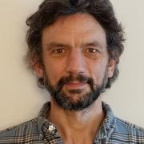
Jonathan started out in academia, gaining degrees in Physics and Math and a PhD in Atmospheric Science.
Since then he has been involved in software projects in many different fields, forming his own company (Cloudgarden Software) in 2006 with products such as a library that implemented the Java Speech API and a GUI builder plugin for Eclipse (named Jigloo). Most projects involved databases and user interfaces on platforms from desktop, to web and mobile.
He has worked with...
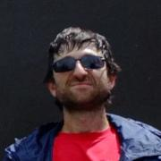
Dima is a long-time user and contributor to various Free Software projects. He lives in the shell inside Emacs on his Debian box, and is constantly looking for ways to save keystrokes. He plays with robotics tools during the day, and tries to give away as much of his work as possible.
Sonya Koptyev is the Director of Evangelism at Twistlock. She has been driving community efforts across various development technologies since the early days of SharePoint and .NET. Sonya worked on building the Office developer community and the Microsoft AI developer community and bringing the latest in bleeding edge technologies into the hands of developers. As part of Twistlock, Sonya is looking to bring the world of secure cloud native development into the hands of every developer,...
Kenneth Koski is a machine learning engineer at Canonical with a focus on providing a scalable platform for ML workflows in Kubernetes. As far as a session description goes, this is my first time attending/presenting at SCaLE. Are you able to tell me what exactly is involved in a workshop, as opposed to a regular presentation? I think that might affect my session description.
Vangelis Koukis is co-Founder & CTO of Arrikto. Arrikto is a core contributor to the Kubeflow project, mainly in the areas of data management and UX. Arrikto creates software to transform how distributed applications discover and consume data on-prem or on the cloud, and empowers end users to iterate faster and easier, creating new collaboration workflows among teams.
Jason Kridner is a software architecture manager for embedded processors at Texas Instruments Incorporated (TI). A 25-year veteran of TI, Kridner is also a founder of the BeagleBoard.org Foundation, maintainer of open-source development tools such as BeagleBoard, -xM, -X15, BeagleBone, Black, Blue, and the new ultra-tiny and ultra-low-cost PocketBeagle. Kridner participates in numerous coding and open-source mentoring/education efforts, including serving as an administrator for BeagleBoard....
Alexander is the CEO of Tempesta Technologies, Inc., and is the architect of Tempesta FW, a high performance open source Linux application delivery controller. Alexander is responsible for the design and performance of several products in the areas of network traffic processing and databases. He designed the core architecture of a Web application firewall, mentioned in the Gartner Magic Quadrant, and MariaDB system versioning.

Bradley M. Kuhn is the Policy Fellow and Hacker-in-Residence at Software Freedom Conservancy (SFC). Kuhn began volunteering in the software freedom movement in 1992 — as an early adopter of Linux and contributor to many FOSS projects including Perl. As Free Software Foundation (FSF)'s Executive Director from 2001-2005, Kuhn led FSF’s GPL enforcement and invented the Affero GPL. Kuhn was SFC’s primary volunteer from 2006–2010 and its first...
Nisha is the maintainer of the Tern Project (github.com/vmware/tern). She advises on OSS compliance for containers at VMware. She also likes to fiddle with open hardware.
Currently leading the webOS platform team at Silicon Valley Lab for LG Electronics located in Santa Clara, California. His team is responsible for delivering webOS Platform & App Frameworks for LG products as well as open source versions. Lokesh's team is also behind introducing OpenEmbedded in LG and leading the effort of migrating many LG products to use OpenEmbedded.

Ben Kuo (AI6YR) has been a longtime Linux enthusiast, as well as more recent ham radio operator, and is enthusiastic about building, fixing, and playing with all kinds of amateur radio gear, plus developing projects--both hardware and software--ranging from Raspberry Pi, Arduino, mesh networking, QRP radios, antennas, and embedded software. He also enjoys taking amateur radio outdoors, with Summits On The Air (SOTA) activations, hiking and backpacking with QRP. For his day job, he is the...

Lars Kurth is a highly effective, passionate community manager with strong experience of working with open source communities (Symbian, Symbian DevCo, Eclipse, GNU) and currently is the community manager for the Xen Project. Lars has 11 years of experience building and leading engineering teams, strong experience of working with open source communities, with a track record of executing several change programs impacting 1000+ users, complemented by strong analytical, communication,...
Thea Lamkin lead's open source strategy and programs at Google for the Kubeflow Project. Before, she built developer communities at Apollo GraphQL, Docker and New Relic. She loves designing human systems that enable contributors to meaningfully participate in open source through code, content, and evangelism.

Stuart Langridge does consultancy and custom development for the web, mobile web, and Ubuntu. Code, writings, and business details (and the occasional rant) are to be found at http://kryogenix.org and @sil on Twitter; Stuart is to be found outside in the rain looking for the smoking area.

Intending to become a programmer, Dustin got sidetracked and spent more time than he cares to admit doing theoretical physics and mathematics with no relevance to software. He's better now.
Some little-known facts about Dustin Laurence:
He first used a computer playing Colossal Cave Adventure and the
bootleg Fortran IV version of Zork over a glass teletype and an
acoustic modem.
His first good programming language was C. He lies and...

Tom is an artist who has been using and making various open source tools to help produce his artwork for almost 20 years. For instance, he created desktop publishing software called Laidout to produce his comic books, and is now exploring the many aspects of video game production. He is based in Portland, Oregon, USA.
Jeremy Lewi is a co-founder and lead engineer at Google for the Kubeflow project, an effort to help developers and enterprises deploy and use ML cloud-natively everywhere. He's been building on Kubernetes since its inception starting with Dataflow and then moving onto Cloud ML Engine and now Kubeflow.
Cami Lewis is a community advocate for security at Elastic. She has maintained her focus on large enterprise security and compliance for nearly 20 years, spanning both private and public sectors. Prior to Elastic, she worked for IBM, Hewlett Packard Enterprise, and Micro Focus in various InfoSec roles. She is passionate about security, compliance, and turning arcane technical subjects into compelling business stories. In her spare time you will find her at the race track participating in...

Stephanie is President / Linux Consultant at VCT Labs, an Engineering Services company composed largely of long-time Linux enthusiasts, some of whom are also long-time SCALE participants. Stephanie has attended and greatly enjoyed every single SCALE thus far, and after several stints of volunteering at various booths (SBLUG, Gentoo, and WebOS Ports to be specific), it's time for a turn at the speakers podium, taking this opportunity to share some embedded Linux experience acquired over...
Dean Logan is the Registrar-Recorder/County Clerk for Los Angeles County, California -- the nation’s largest, most diverse local election jurisdiction serving more than 5.2 million registered voters. I addition to serving as the ex officio Supervisor of Elections, the Registrar-Recorder/County Clerk records real property documents; maintains vital records of births, deaths and marriages; issues marriage licenses; performs civil marriage ceremonies; and processes business filings and other...

Manrique is the CEO and shareholder in Bitergia and a free, libre, open source software development communities passionate. He is a graduate Industrial Engineer with research and development experience from the Technological Center for Computer Science and Communications of the Principality of Asturias (CTIC), W3C working groups, Ándago Engineering, and Continua Health Alliance. Former executive director of the Spanish Open Source Enterprises Association (ASOLIF), and expert consultant for...

Federico Lucifredi is the Product Management Director for Ceph Storage at Red Hat and a co-author of O'Reilly's "Peccary Book" on AWS System Administration. Previously, he was the Ubuntu Server product manager at Canonical, where he oversaw a broad portfolio and the rise of Ubuntu Server to the rank of most popular OS on Amazon AWS. A software engineer-turned-manager at the Novell corporation, he was part of the SUSE Linux team, overseeing the update lifecycle and...
Renee Lung is a Canadian expat, mother to three cats, and chronic hoarder of craft supplies. Although she's principally a backend engineer, indulging in front-end work is her occasional guilty pleasure.
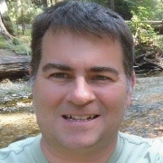
Pete MacKinnon is a Principal Software Engineer in the AI Center of Excellence at Red Hat. He is also actively involved in the open source Kubeflow project to bring machine learning workloads to container environments (Kubernetes and OpenShift).
I am a high school student at Santa Monica High School who is interested in a Computer Science degree in the future.
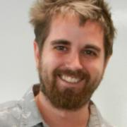
Desmond is a Senior at Polytechnic School in Pasadena. Once he learned Python, he became hooked on programming and computer science. Desmond is also a strong advocate for privacy protections, going so far as to carry a pocket Constitution. He is extremely passionate about digital privacy law and is strongly considering entering that field as a profession in adulthood.
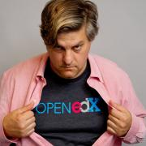
John Mark Walker is the Open edX Community Lead for edX. He has been an open source community and ecosystems expert for 2 decades, starting with VA Linux Systems and SourceForge.net. He was the Gluster Community Leader at Red Hat, and was the product and community owner for ViPR Controller at EMC. He has written extensively on community, ecosystem and product management for OpenSource.com and Linux.com.

Ell Marquez is a proud advocate of Hacking Is Not and Crime and Operation Safe escape. She has traveled the world for five years, educating security practitioners on subjects from on-prem infrastructure to the cloud and everything in between. As part of her journey in 2022, Ell transitioned to GRIMM with the focus on researching and training organizations on strengthening their defenses against the latest cyber threats.
Journalist and editor at home in the busy intersection of tech and everyday life, with a special interest in data and maps. More on both of those at https://www.zoomata.com An open-source proponent since more or less forever, I've been known to hand out recipes based on the four freedoms and worn a plushy penguin costume on a few occasions. I’m currently the editor for Superuser, a publication...
Jon Mason is a Software Engineer with nearly 20 years experience in the industry. Jon joined Arm in October 2018 with his sole purpose being to make all Arm aspects of Yocto/OE as awesome as possible. Most recently, he was employed at Broadcom performing a variety of tasks including Linux kernel bring-up on new Arm SoCs, enabling hardware in u-boot, and porting Zephyr to a new Arm Cortex-A based SoC. Much of this development was done in the Yocto environment, which provided Jon a good...
Yoshinori Matsunobu is a Production Engineer and MySQL tech lead at Facebook. Yoshinori created MyRocks (RocksDB Storage Engine for MySQL), and successfully migrated top two largest Facebook's database backends -- -- main database called UDB and Facebook Messenger -- to MyRocks, which saved the number of servers to less than half. Yoshinori has been around MySQL community for over 15 years. Yoshinori created a couple of useful open source software prior to MyRocks, including MHA (...
Bronwyn Mauldin oversees a Research and Evaluation team that utilizes data and social science methods to improve the LA County Department of Arts & Culture's work to increase equity and inclusion through the arts. Bronwyn has spent her career conducting applied research and evaluation for nonprofits, philanthropies and government. She also teaches research methods to master's students in the arts administration program at Claremont Graduate University. Across her career in...
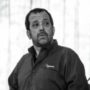
Software architect at Symas. Apache Directory PMC Chair. Previous member of the OpenLDAP Engineering Team.
Close to a decade of experience in the energy commodity markets with particular focus building out scalable research platforms for trading desks (data collection, data analysis, data modeling). Joined MavenCode in mid 2018 and is currently working as a Product Manager and Data Pipeline Architect focusing on the design and implementation of large scale AI & ML data pipelines.

Michael Meskes is CIO of Instaclustr, the one-stop destination for deploying, managing, supporting, and monitoring all open source components of the data layer and related infrastructure. He also manages credativ and its Open Source Support Center that employs leading members of a number of open source projects. He has been an open source developer for nearly thirty years working on different open source projects among which Debian and PostgreSQL are most widely known. Michael has engaged...
Urvashi Mohnani is a Software Engineer at Red Hat on the OpenShift Containers team. She has spent the past year developing emerging Open Source container technologies such as CRI-O, Buildah, and Podman.
Jeffry, currently, works at MayaData which sponsors the OpenEBS project. He has been in the storage industry for over 10 years and has done development work on traditional SAN/NAS storage solutions as well as scale out object-based storage systems. Before the container wave started, it was not uncommon to have storage separated into so-called multiple tenants, where each tenant has its own (virtual) storage system to their disposal. Now, with the container ecosystem taking off at a high pace...

Drew is currently part of the Mender.io open source project to deploy OTA software updates to embedded Linux devices. He has worked on embedded projects such as RAID storage controllers, Direct and Network attached storage devices, bootloaders and operating systems. Drew has spoken at various conferences, including Embedded Systems Conference and All Systems Go.
He has spent the last 7 years working in Operating System Professional Services helping customers develop production...
Fred Moyer is a Developer Evangelist with Circonus.com, and is the world’s biggest IRONdb fan. Previously he was a Staff Engineer at Turnitin.com, where he helped to develop and scale their web services to handle deadline based submission surges. Fred is a 2013 White Camel award winner, an Apache Software Foundation member, and a longtime contributor in the open source community. He holds engineering undergraduate degrees from UC Davis, and a graduate engineering degree from University of...
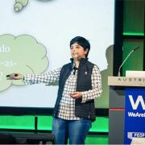
Juni is a thought citizen in the DevOps space, and her work is showcased at https://continuity.world/gallery. She has helped small, medium, and large organizations implement the continuous paradigm and has led projects that improve Time2Market. She has worked across diverse domains like identity, security, media, advertisement, retail, camera, phone, banking, and insurance.
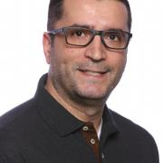
Fatih is a Cloud Customer Engineer at Google where he has been guiding his customers in their virtualization and cloud on-boarding journey. Fatih held senior engineering positions previously in Verizon Wireless as Distinguished Engineer, in Canonical / Ubuntu as Senior Solution Architect. Fatih holds MSc in Information Technologies and BSc in Electronics Engineering.
With over 30 years of IT experience at the County of Los Angeles, Jon Neill has been a visionary and technology leader at both the Internal Services Department (ISD) and the Auditor-Controller. Jon is currently a Senior IT Specialist in ISD’s Customer Applications Branch leading the Data Analytics and Business Intelligence team. He is spearheading ISD’s transformation on how technology is delivered to its customers including Big Data, Agile, and DevOps programs, pushing the County towards...
Sarah is one of the owner-operators at Prgmr.com, a virtual server provider with a focus on providing a consistent and accessible user experience. She started working at Prgmr.com after growing dissatisfied with the typical corporate experience.
Her career started with FPGA development. She still actively works on both bare metal and Linux based embedded systems when not working on Prgmr.com and hopes to see the day when x86 is no longer the architecture of choice in the data center....

Duane O’Brien is an independent researcher focused on open source funding and sustainability. He loves driving this passion through collaboration and conversation. Duane is a force of chaotic good, using his high stats in intelligence and charisma to advocate for the open source community.

I'm an SRE manager working on deploying scalable solutions for The Walt Disney Company. Previously I worked at DreamWorks Animation where I supported the render farm, core systems team, and new business initiatives. Making it easy to run applications well by providing a paved road w/ best practices built in.
Find me on Twitter @dontrebootme
Owen O’Malley is a co-founder and Technical Fellow at Hortonworks, which develops the completely open source Hortonworks Data Platform (HDP). HDP includes Hadoop and the large ecosystem of big data tools that enterprises need for their data analytics. Owen has been working on Hadoop since the beginning of 2006 at Yahoo, was the first committer added to the project, and used Hadoop to set the Gray sort benchmark in 2008 and 2009. In the last 10 years, he has been the architect of MapReduce,...
Sally O’Malley (https://github.com/sallyom) is a Software Engineer at Red Hat. She has worked on various teams within OpenShift -
creating, deploying, and managing containers along the way.
Erik Osterman is a technical evangelist and insanely passionate DevOps guru with over 12 years of hands-on experience architecting systems for AWS. After leading major cloud initiatives at CBS Interactive as the Director of Cloud Architecture, he founded Cloud Posse, a DevOps professional services company that helps high-growth Startups and Fortune 500 Companies succeed in the cloud by leveraging Terraform and Kubernetes.

Alan started programming when he was four years old on his dad's Commodore 64 and began using Linux in the mid-90s while in high school. He currently works for SoftIron, a Silicon Valley startup making the world's finest appliances for the data center, including scale-out storage hardware running Ceph. Alan is the creator and maintainer of M-Stack, a free and open source USB device stack for PIC micocontrollers, and HIDAPI, a cross-platform host-side USB HID library; and is a...
- Serial Entrepreneur
- Co-Founder of OpenStack
- Former Coordinator of Docker Los Angeles Meetup group
- Executive at Google
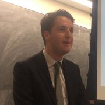
Hunter Owens is the Senior Data Scientist at the City of Los Angeles Information Technology Agency. Prior to joining the City, he worked for the University of Chicago’s Center for Data Science and Public Policy, KIPP NJ, and Obama for America. You can find on Github and Twitter
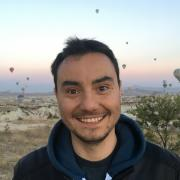
Sertaç Özercan is a software engineer in Microsoft. He is based in San Francisco and works on managed OpenShift on Azure and Azure Kubernetes Service (AKS) in the Cloud Native Compute team in Azure. He is interested in running distributed machine learning workloads at scale using Kubernetes.
Tim is a software engineer with over 20 years open source development experience. He currently is employed as a Senior Staff Engineer in VMware's Open Source Technology Center where he acts as an open source developer advocate and contributes to upstream projects such as kubernetes, including serving one the 1.10 through 1.13 release teams and leading the 1.12 release. In his past he's worked on the linux kernel, device drivers, distributions, software update, Android, OpenStack,...

Murriel is a Customer Engineer with Google Cloud, and works with enterprise customers to solve technical and business challenges and build applications on the cloud. She is currently enthusiastic about DevOps and Platform Engineering, Kubernetes, and the Developer Experience. She leads the Social Impact committee for the local chapter of Women@Google and is an advocate for mentorship and community building. Murriel also holds a position on the executive...
Lyn started using Linux after she graduated from UCLA and started on IRC support and then testing Lubuntu. She then went on to most recently become the documentation team leader of Lubuntu.
Neil Peterson is a datacenter and cloud enthusiast. With 15 years' experience in large datacenter deployment, management and maintenance operations, Neil now works as a cloud advocate delivering technical training, documentation, and samples with focus on Azure infrastructure, automation, and Kubernetes.
Scott is the user interface designer and developer for the open source painting application Krita. He has been a contributor for the past 5 years and wrote an award winning book in 2015 that you can find on Amazon. He has helped designed and develop everything from its animation system, layer management, brush editor, and many other design and UX improvements over the years.
Christophe has been working with PostgreSQL since 1997. He is the CEO of PostgreSQL Experts, Inc.
Andrew Pierno is the CTO of WiZR. He is a UC Berkeley alumn and was formerly the Head of Development for Zuma Ventures. He has also worked at the Emmy Award Winning company Sync-On-Set, built the first peer-to-peer dog walking app, and glows at night due to having worked at SONGS nuclear power plant. He is also part of the music collective WRANNAMAN.

Matt Porter is the CTO of Konsulko Group, working on the design and development software for embedded Linux based systems. Matt specializes in the Linux kernel and associated FOSS middleware that provides the plumbing for applications. Outside of work he hacks on various random Linux kernel drivers and subsystems. Matt has spoken at previous conferences on the topics of userspace drivers, Android, Linux 6502 remote processors, kernel testing, USB gadget configfs, kernel upstreaming, and...
Horea Porutiu is a Developer Advocate focused on improving the developer experience on IBM Cloud and speaks at numerous events about blockchain and Hyperledger. Horea has been named a top writer for the leading tech blog site, Hacker Noon and is obsessed with creating the perfect programming tutorial.

Corey is the Chief Cloud Economist at The Duckbill Group, where he specializes in helping companies improve their AWS bills by making them smaller and less horrifying. He also hosts the "Screaming in the Cloud" and "AWS Morning Brief" podcasts; and curates "Last Week in AWS," a weekly newsletter summarizing the latest in AWS news, blogs, and tools, sprinkled with snark and thoughtful analysis in roughly equal measure.
Khem Raj is a Linux architect at Comcast, helping several open source initiatives within the company: He is guiding the company's adoption of open source software, and becoming an active contributor to the open source components used in the RDK settop software stack. One of the most recent projects he has worked on is migrating RDK to an OpenEmbedded/Yocto-based framework for build system and embedded Linux distribution generation. He is also actively working on making the RDK community...

Sriram Ramkrishna spent over 22 years working in open source communities building coalitions to solve problems, working as a connector between projects and help supporting open source communities. Sri uses his background in his role as Principal Ecosystems Engineer for ITRenew/Sesame in corporate open source communities like the Open Compute Project, CNCF, and the Linux Foundation.
Sri is one of the Lead Software Engineers at Enova International, and co-organizer of the Chicago PostgreSQL User Group. He loves distributed systems data and evangelize better understanding of data structures, domains and models to foster sustainable design and architecture.
Sri has a Masters from Purdue University in Computer Engineering and wrote his thesis on Paxos based metadata management for Geo-Replicated Cloud Storage systems.

Kyle Rankin is a security and infrastructure expert with over two decades of professional Linux experience. He is the author of How To Write A Tech Book, The Best of Hack and /: Linux Admin Crash Course, Linux Hardening in Hostile Networks, DevOps Troubleshooting, The Official Ubuntu Server Book, Third Edition, Knoppix Hacks, 2nd Edition, and Ubuntu Hacks, among other books. Rankin was an award-winning columnist and tech editor for Linux Journal, and speaks frequently on Free and Open Source...
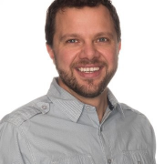

22-year old guy who is currently a Sr. Developer Support Engineer for Auth0, and member of the Ubuntu Community Council. Actively participating on the Ubuntu Project, loves photography and food.
Carmine Rimi is a Product Manager at Canonical where he is responsible for the global AI/ML strategy including Kubernetes. Prior to joining Canonical in May 2018, Carmine held senior positions in cloud product management and engineering at companies including Amazon Web Services, VMWare, WorkDay, Mirantis and Huawei. He has delivered web scale technology and solutions across the entire cloud stack - infrastructure, platform and software. In addition to his current role at Canonical, Carmine...
Will Rosecrans is a Senior Platform Engineer at Verizon Digital Media Services, where he works on the EdgeCast Content Delivery Network. As part of a team responsible for the care and feeding of thousands of Linux systems serving Terabits per second of Internet traffic, Will is always trying to make large and complicated systems go faster and work better. At VDMS, Will is the leader of an internal community dedicated to retiring legacy code, and dealing with technical debt.

Steven started working on the Linux kernel in 1998, and become a professional (paid) kernel developer in 2001. He's one of the original authors of the PREEMPT_RT patch, that turns Linux into a hard real-time OS, and is also the original creator and current maintainer of Ftrace, the official tracer of the Linux kernel. Steven is still very active in developing new features for Linux as well as getting involved in the community. Steven has given over 80 talks around the world, has been on...
Alexander is a Principal Security Engineer at Amazon Web Services (AWS), leading RDS security team.
Alexander worked with MySQL since 2000 as DBA and Application Developer. Alexander was working as MySQL principal consultant/architect for over 15 years, started with MySQL AB in 2006 (company behind MySQL database), Sun Microsystems, Oracle and then Percona. He helped many customers design large, scalable and highly available MySQL systems, optimize MySQL performance and improve MySQL...
Guinevere Saenger started out her professional life as a classical pianist, and after a few adventures transitioned to a second career in tech. She found her happy place in the world of SRE/platform engineering and developer tooling, and today, she works on open source cloud provider plugins for Pulumi.
Guinevere has been active in the Kubernetes community, where she has created documentation and workshops for new contributors, and served as Release Lead for the 1.17 Kubernetes release...
Yuki is a Software Engineer in the Cloud Infrastructure team at Edmunds, where he builds highly resiliant and performant systems on the AWS platform. There, he leads the open source project ShadowReader, a serverless load testing framework being used every day at Edmunds. In his day to day, he works with technology like Docker, Kubernetes, and AWS Lambda.
Ryan is a genuine and passionate developer focused on helping people succeed. Currently residing in San Diego, Ryan has done just about every job in IT/Development in his career.
In his spare time Ryan raises two children with his wife, plays Basketball, plays Rocket League and tinkers around with anything that makes development fun. Ryan will accept any 1 on 1 challenge in Basketball.

Jennifer started Sound Data in 2008 after ten years building research databases at the University of Washington. She has built a wide variety of data systems for clients in science and engineering. She holds a MS from the University of Washington and is a certified Oracle Applications Developer.

Brian Scott is an Manager of Systems Reliability Engineering at The Walt Disney Company, focusing on Customer SRE, Public Cloud, Automation, and promoting SRE best practices across the Enterprise. Supporting small and large applications in the cloud across all Disney segments. Has a strong passion for Golang and containerization and bringing the best experience to Disney’s guests.
Since my time as a teenager in the 90s I was interested in IT security. After visiting my first Chaos Computer Club (CCC) congress I got hooked and never looked back. In the last ten years I am a member of the SUSE security team and try to make open source software more secure.
There I'm the lead of the proactive group and work on auditing software, SELinux and product pentesting. As a side project I build up an internal Red Team to improve the security of our infrastructure.
Nell Shamrell-Harrington is a Principal Software Development Engineer at Chef and member of the Habitat core team. Additionally, she is CTO of Operation Code, a non-profit dedicated to teaching military and veterans software engineering skills. She specializes in Chef, Ruby, Rails, Rust, Regular Expressions, and Test Driven Development and has traveled the world speaking on these topics. Prior to entering the world of software development, she studied and worked in the field of theatre. The...

Ty works with SMBs to achieve compliance for PCI and SOC2 standards. He has been working in the industry for over 25 years as a programmer, systems architect, and manager of development, IT and DevOPs teams. He was a cofounder of Kagi, an e-commerce company based in the San Franciso Bay Area where he worked on Payment systems for 15 years. He was one of the original team members of LoopPay (a.k.a SamsungPay Boston) where he was a Director of Security and Compliance for 5 years. When he is...
My name is Joshua, and I am a Programmer / Web Developer, specializing in Go (Golang) and Ruby. Being born in the heart of Silicone Valley, I was exposed to programming at a young age via the Lego Mindstorms Programmable Computer. Little did I know, this exposure to programming, would be the catalyst that fuels an unquenchable thirst for learning. I strive to continue leaning new programming languages, as well as creating clean, well documented, and easily to read code. I now reside in the...

Eduardo is an entrepreneur and software engineer. He is currently one of the Fluentd project maintainers and creator of Fluent Bit, a lightweight Logs and Metrics processor. He also is the founder of Calyptia (the Fluent company).


Many years ago amongst the snow drifts and tundra of the great frozen north, Michael Starch earned his Bachelor’s degree in Computer Engineering from the University of Michigan. Leaving his beloved homeland behind, he started a career at NASA's Jet Propulsion Laboratory in sunny Pasadena. He has remained there ever since working as a developer, operator, engineer, and open source community manager on a myriad of projects and missions. He also mentors at San Marino High School on Fridays....

Dave Stokes is an open-source software and database fan. He has worked at companies ranging alphabetically from the American Heart Association to Xerox, has three college degrees, enjoys riding his Honda Goldwing motorcycle, lives in North Texas, and started with UNIX in the Version 7 days. He is the author of MySQL & JSON - A Practical Programming Guide, which is available at Amazon.com

Matty Stratton is a Staff Developer Advocate at Pulumi, founder and co-host of the popular Arrested DevOps podcast, and the global chair of the DevOpsDays set of conferences.
Matty has over 20 years of experience in IT operations and is a sought-after speaker internationally, presenting at Agile, DevOps, and cloud engineering focused events worldwide. Demonstrating his keen insight into the changing landscape of technology, he recently changed his license plate from DEVOPS to KUBECTL...
Saishruthi Swaminathan is a developer advocate and data scientist in the IBM CODAIT team whose main focus is to democratize data and AI through open source technologies. She has a Masters in Electrical Engineering specializing in Data Science and a Bachelor degree in Electronics and Instrumentation. She is also one of the active members in University AI research team. Her passion is to dive deep into the ocean of data, extract insights and use AI for social good. On a mission to spread the...
Patrick Swartz has been a Linux and opensource advocate since the mid-1990s working with start-ups to Fortune 100 companies to develop opensource strategies. As a father of 8 kids he continually looks for ways to engage his kids in the opensource world.

Cullen Taylor is a Developer Advocate at IBM focusing on Kubernetes and gaming-related use cases for container orchestration technologies. He has an engineering background in open infrastructure, and previously contributed to OpenStack. In his free time, he enjoys creating loops with his guitars and traveling.
Kapil is a Senior Principal Engineer focused on accelerating best practices around adoption of cloud and containers. He started his career with open source communities, and never looked back. For several years, he spent time as a core developer and consultant with the plone and zope communities. He was a core developer on juju, an open source cross cloud orchestration and provisioning product from Canonical, leading the development of its first production release, UI, and ecosystem tooling...
Mary Thengvall is a connector of people at heart, both personally and professionally. She loves digging into the strategy of how to build and foster communities and has been working with various developer communities for over 10 years. After several years of building community programs at O’Reilly Media, Chef Software, and SparkPost, she’s now consulting and contracting with companies looking to build out a Developer Relations strategy. She's also the author of the first book on...
Working on database-backed, internet-based systems for over a decade, Robert is a published author and long-time open source contributor, having been recognized as a major contributor to the PostgreSQL project for his work over the years. An international speaker on databases, open source, and managing web operations at scale, he occasionally blogs at https://xzilla.net.

Aleksey Tsalolikhin started his career in system administration at a local ISP (EarthLink) in the mid-nineties. Aleksey's mission is increasing the productivity and quality of life (and prosperity) of IT Operations practitioners through effective training in excellent technologies. Aleksey is a member of the UNIX Users Association of Southern California (UUASC) and the Association for Computing Machinery.
Varun is a Senior Principal Engineer currently leading the design and development of a global Network Telemetry Platform @ Verizon Media. Over the course of his 20 year career, Varun has worked in a variety of management and technical roles in startups to web-scale companies, helping build and operate everything from embedded network devices to ad technology at Internet scale.
Belinda Vennam is a developer advocate at IBM, with a focus on serverless. Prior to this role, she was a developer on the IBM Cloud Functions team and a contributor to the open-source Apache OpenWhisk project. Belinda loves to travel, volunteer, and learn about what's happening in the cloud.
Mujib is a Director of Engineering at Oath, a subsidiary of Verizon. He leads the global teams responsible for providing service authentication, authorization, key management, access management, traffic protection, and UGC moderation solutions and infrastructure. Mujib also oversees the development of Athenz (www.athenz.io), an open source platform for X.509 certificate-based service authentication and fine-grained access control in dynamic infrastructures...

Stephen is a principal program manager in the Azure Office of the CTO and adjunct faculty at Carnegie Mellon University. He has worked with open source software in the product space for 30+ years. He has been a technical executive, a founder and consultant, a writer and author, a systems developer, a software construction geek, and a standards diplomat. Developing software engineering learning experiences for students in the natural lab of well-run open source projects is an area of deep...
Mandi Walls is Technical Community Manager at Chef. For Chef, she helps organizations increase their effectiveness using configuration management and modernizing IT practices. She is a long-time sysadmin focusing on large complex web systems.
Quinn Weaver is co-founder of PostgreSQL Experts, Inc., a Bay Area database consulting firm.

Behan Webster is a Computer Engineer who has spent more than two decades in diverse tech industries such as telecom, datacom, optical, wireless, automotive, medical, defence, and the game industry writing code for a range of hardware from the very small to the very large. Throughout his career, his work has always involved Linux most often in the areas of kernel level programming, drivers, embedded software, board bring-ups, software architecture, and build systems. He has been involved in a...
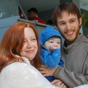
Mike Weilgart has loved maths and computers all his life. Graduating high school at the age of 13, he thereafter worked in a variety of positions including software QA, calculus teacher, and graphic design, before resolving to put his love of computers to professional use as a Linux sysadmin and trainer. Mike currently consults at a Fortune 50 company as an automation specialist, and enjoys nothing more than training people to full mastery of their tools.
Hannah coordinates the collection of voting precinct boundary information with the goal of producing a complete, open-source set of all 50 states plus DC and Puerto Rico. She also hopes to develop intuitive and accessible tools for the public to use the data to do their own redistricting.
Before coming to Princeton, Hannah worked with the Metric Geometry and Gerrymandering Group at their summer Voting...
Joe is a Senior Technical Program Manager at Google within SRE focussed on optimizing for reliability, cost, and release velocity at scale. Joe supports some of Google Cloud’s largest products ...
Tori is a Developer Advocate at New Relic with a focus on enterprise software. Prior to New Relic, Tori was the Community Manager for the Java Developer community at Oracle; a tech writer for developer tools at Sun Microsystems; and a sysadmin for AT&T. She aspires to be data-driven in all aspects of her life.
Dr. Wilkinson completed undergraduate degrees in Computer Science, Mathematics, and Engineering Physics, all with honors, within three and a half years of high school. Upon completion of these degrees, he immediate pursued a Master of Science in Applied Mathematics at the University of California at Riverside. As part of this degree, he participated in the development of a model of a parasite that invests almond orchards. This model, and the corresponding software which Dr. Wilkinson wrote,...
Michael Winslow picked up his love for programming when he was 10 years old writing GW-Basic code on his Tandy-1000. With his passion for designing simple solutions to complex problems, Michael has played key roles at companies like Aramark, Ortho-McNeil, Oracle and Comcast.
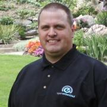
Trevor started programming sometime in the mid-1980s on the family's Apple //e. He has been programming and working with Linux-based systems ever since he was introduced to them at university in the mid-1990s. Professionally he has worked extensively on embedded Linux systems, as well as various RTOSes and bare-metal systems.

Mark Wong is a Software Development Engineer at EDB and is a PostgreSQL Major Contributor. He first introduced himself to the PostgreSQL community in 2003 with open source benchmarking kits and performance data. Since then, he has continued to contribute to various aspects of the community such as a Google Summer of Code mentor, Conference Organizer, Portland PostgreSQL Users Group Co-Organizer, PostgreSQL Fundraising Group Member, and a Director on the Board of the United States PostgreSQL...

Steve is a developer working on open source projects: Steve has been active in the Kubernetes and Mesos projects since 2015.
Steve is employed by the Cloud Native Applications business unit at VMware and is co-lead of the Kubernetes IoT and Edge Working Group.
Steve is a volunteer mentor for the Whitney High competitive robotics team. He has been doing home automation since before it was called the internet of things. In his spare time he likes to hang out at the 23b Hackerspace...
I'm a software engineer for Puppet, where I'm currently working on our open source remote task runner Bolt. I graduated from Oregon State University with a BS in Computer Science in June 2016, where I worked as a Front-End Engineer for the OSU Open Source Lab. In my free time I enjoy hanging out with friends, hiking, experiencing new things, and enjoying a wide variety of podcasts, tv shows, blogs, books, and other media.
You can see more of my work at...
Jimmy is currently a team lead for PolarDB Storage Engine in Alibaba Cloud. Before joining Aliaba, he was an InnoDB Architect in Oracle. He also worked in Sybase's Enterprise Server team as the index team manager.
Hunyue Yau from HY Research LLC (http://www.hy-research.com/) is an embedded Linux Consultant, software and hardware developer, and enthusiast with over 20 years of involvement in Linux. He has worked on numerous Linux architectures including x86 and ARM. Areas of interest include sensors, low power and small foot print for mobile, and embedded Linux devices with a focus on low level kernel and hardware details. Prior works include development of one...
Jie Yu is a Tech Lead at Mesosphere, Inc, focused on containerization, storage and networking. Jie is an Apache Mesos PMC member and committer, and is the co-author and maintainer of the Container Storage Interface (CSI) spec. Before joining Mesosphere, Jie was a software engineer at Twitter. Jie obtained his PhD in Computer Science and Engineering from the University of Michigan. Jie has spoken at various academic and industry conferences like OSS Summit, QCon, MesosCon, OOPSLA, MICRO, etc...

Peter Zaitsev is an entrepreneur and co-founder of Percona. As one of the foremost experts on Open Source strategy and database optimization, Peter leveraged both his technical vision and entrepreneurial skills to grow Percona from a two-person shop to one of the most respected open source companies in the business with staff members more than 350. Now Peter continues as a Board Member & Advisor in a range of open source startups. Peter is a co-author of High Performance MySQL:...
Rita Zhang is a software engineer at Microsoft, based in San Francisco. She is on the Azure Cloud Native Compute team building features for Kubernetes upstream and for Azure Kubernetes Service. Rita is passionate about open source and running distributed workloads at scale.